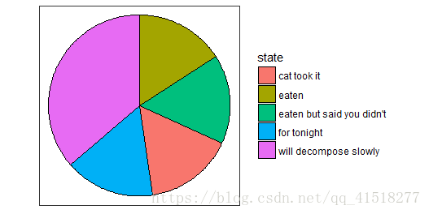
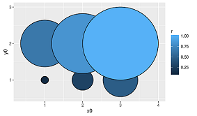

ggforce
绘制饼图
开始和结束位置定义geom_arc_bar
geom_arc_bar(aes(x0,y0,r0,r,start,end,explode), data, stat = "arc_bar",position = "identity", n = 360, na.rm = FALSE)区块的大小定义geom_arc_bar
geom_arc_bar(aes(x0,y0,r0,r, amount,explode), data, stat = "pie",position = "identity", n = 360, na.rm = FALSE)开始和结束位置定义geom_arc
geom_arc(aes(x0,y0,r0,r,start,end), data , stat = "arc",position = "identity", n = 360, arrow = NULL, lineend ="butt"/“round”/”square”, na.rm = FALSE)参数： x0,y0,r0,r: 圆心，内半径，外半径 explode: 突出显示变量
# We'll start by defining some dummy data
pie <- data.frame(
state = c('eaten', 'eaten but said you didn\'t', 'cat took it',
'for tonight', 'will decompose slowly'),
focus = c(0.2, 0, 0, 0, 0),
start = c(0, 1, 2, 3, 4),
end = c(1, 2, 3, 4, 2*pi),
amount = c(4,3, 1, 1.5, 6),
stringsAsFactors = FALSE
)
p <- ggplot() + theme_no_axes() + coord_fixed()
# For low level control you define the start and end angles yourself
p + geom_arc_bar(aes(x0 = 0, y0 = 0, r0 = 0, r = 1,
start = start, end = end, fill = state),
data = pie)

绘制圆
circles <- data.frame(
x0 = rep(1:3, 2),
y0 = rep(1:2, each=3),
r = seq(0.1, 1, length.out = 6)
)
ggplot() + geom_circle(aes(x0=x0, y0=y0, r=r, fill=r), data=circles)
